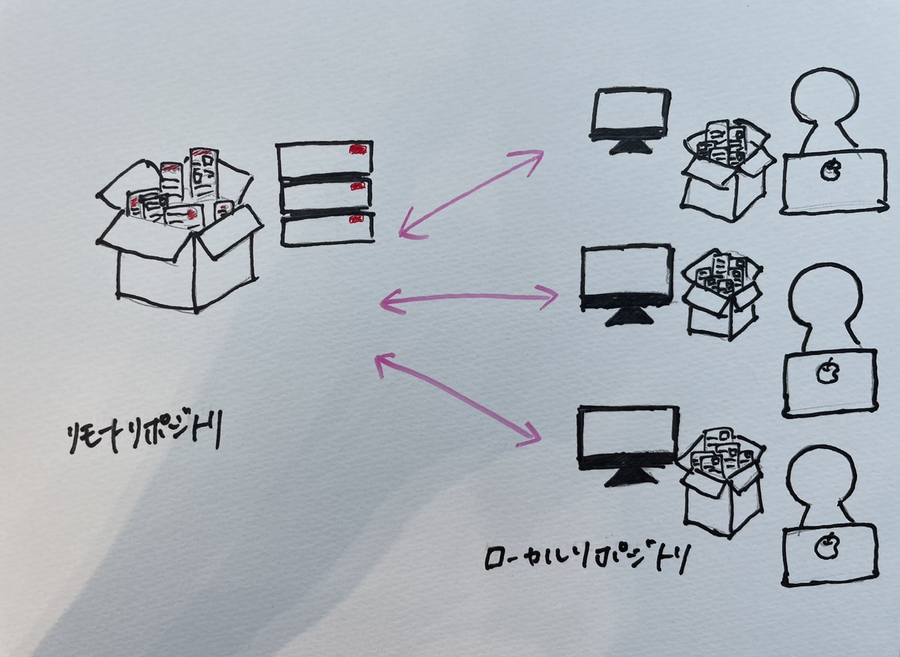
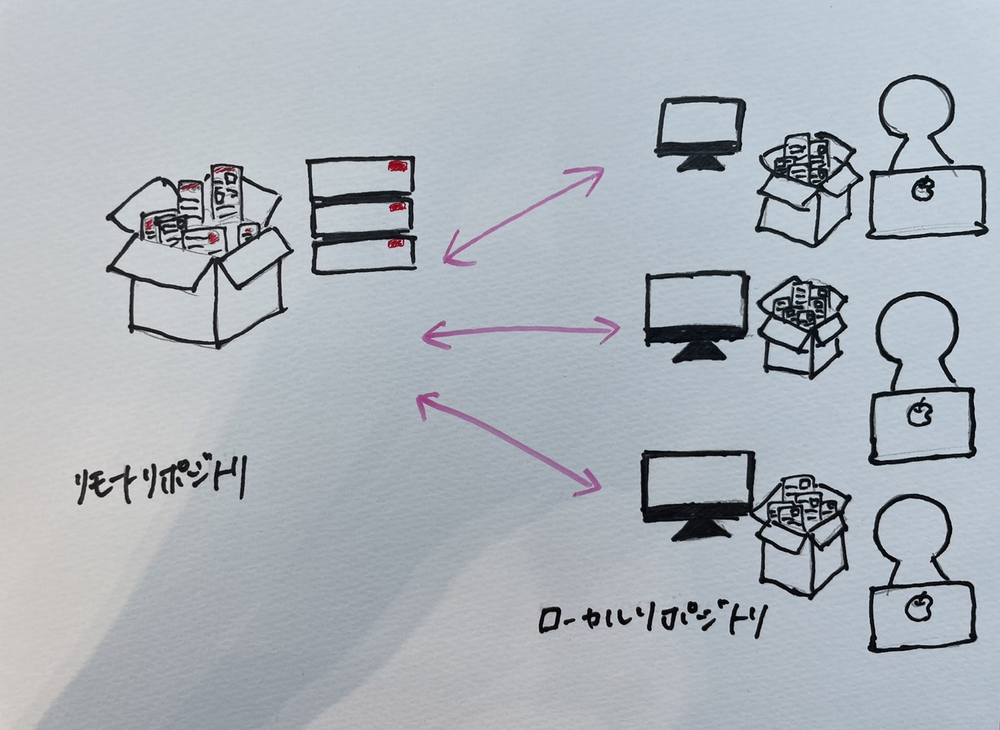
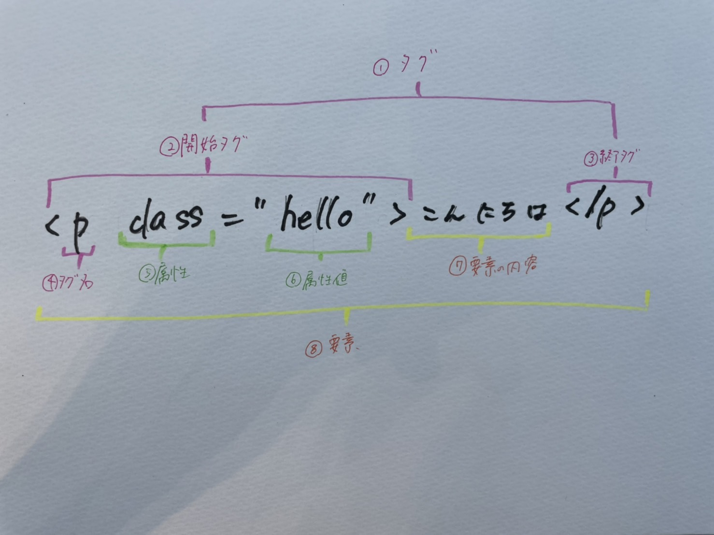
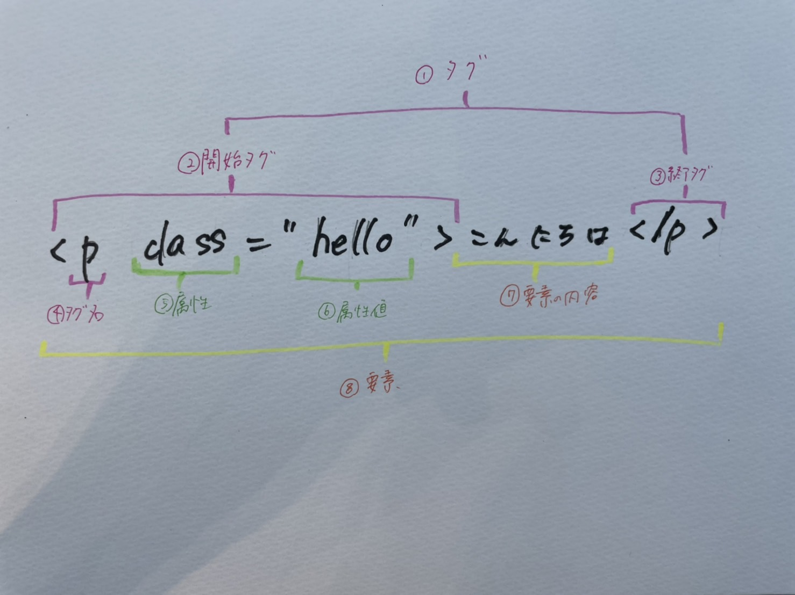

- Gitとは…
- Htmlとは…
HPを編集して、GitHubに反映させるためには、３段階のコマンドを実行する必要がある。


３段階のコマンド
add → commit → pushaddコマンド → 変更内容をすべて、反映させる。
commitコマンド → 変更したことを変更履歴に残すためにラベリングする
*変更したことをみんなに共有*pushコマンド → GitHub(リモートリポジトリ)に送信する。
Gitのイメージ

HTMLとは、ハイパーテキスト・マークアップ・ランゲージ（Hyper Text Markup Language）の略。
→ コンピュータが理解できる、マークアップするための言葉。
マークアップというのは、もともと雑誌や新聞の編集用語で、文章構成の指示のことを指す。
つまり、ホームページを作る際、まずはHTMLを使って文章構成の指示を出すことで、ホームページに表示したい情報を形作る、ということになる。

→ コンピュータが理解できる、マークアップするための言葉。
マークアップというのは、もともと雑誌や新聞の編集用語で、文章構成の指示のことを指す。
つまり、ホームページを作る際、まずはHTMLを使って文章構成の指示を出すことで、ホームページに表示したい情報を形作る、ということになる。
HTMLの基本的な書式

①タグ
小なり記号と大なり記号を囲んで記述し、開始タグと終了タグを合わせてタグという。
②開始タグ
必ず開始タグで始まる。開始タグには属性を含めることができる。
③終了タグ
多くのタグには終了タグがある。終了タグに属性が含まれることはない。
④タグ名
＜＞の中にタグ名を記述する。
⑤属性
属性を使用するとタグに追加的な情報を付加できる。
⑥属性値
属性値には設定したい値を記述する。属性値は必ずダブルクォートで囲むこと。
⑦要素の内容
開始タグと終了タグに囲まれた部分のことを要素の内容という。
⑧要素
タグ(開始タグ、終了タグ)とその内容をひとまとめにして要素という。